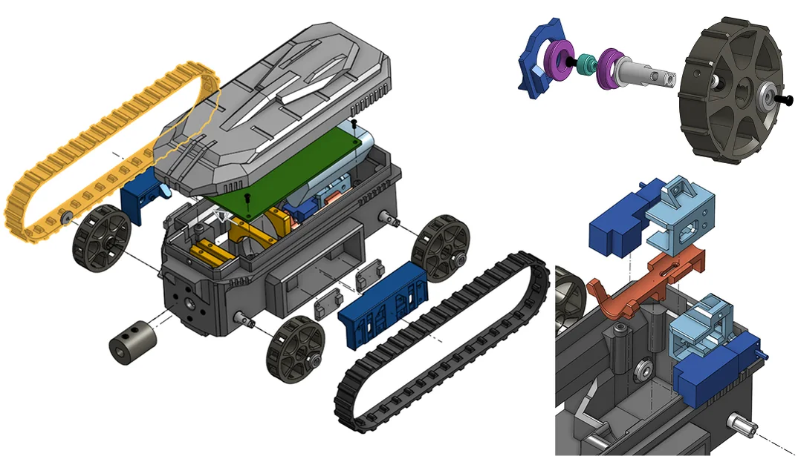

Senior Capstone: Autonomous Gutter-Cleaning Robot
A compact tank-tread robot that clears leaves out of rain gutters.
Chassis & Drivetrain Lead · University of Washington · Jan to Jun 2025 · Team of 5
Skills
The project
I’ve lived in the Pacific Northwest for 4 years, and everyone knows just how often it rains. That means lots and lots of leaves piling up on roofs, where they decay, clog the drainage pipes and quietly lead to expensive water damage. Our group set out to fix that with an autonomous, remote-controllable robot small enough to ride inside a gutter. It has a compact chassis, 2 high-torque motors on tank treads, and side time-of-flight sensors with a PID controller to keep it on track. A powerful front brush scoops out debris, and a radio controller lets you drive it yourself.
What I did
As the chassis and drivetrain lead, I had a lot of specs to juggle. It had to be small enough for a gutter, powerful enough for slippery terrain, and easy to assemble and 3D print. I’ve built with LEGO for years, and I knew we’d keep upgrading parts as we tested. So I designed the chassis as snap-fit modules that swap out easily. We never had to refabricate a major component, and we could keep testing while waiting on new electronics.
What I learned
This project pushed me to think about complete electromechanical assemblies in 3D, and it gave me one of my favorite moments as an engineer. My teammate printed the parts on his 3D printer at home. I distinctly remember how amazed he was that every fit came out perfectly in PLA, from interference fits to slide fits to snaps. All the parts just snapped together like clockwork.
It also gave me my most stressful moment. Just hours before the demo, during one of our final assemblies, a teammate pressed the radio controller in too firmly, and its underside pins pierced the battery. In our pursuit of compactness, we had left no room for that kind of mistake. My heart sank. We ran around campus asking for help, scrambled for a new Teensy microcontroller, and got it repaired just before the demo. It was a real lesson about redundancy, and not only in the design. You also have to think about where people will push and press during assembly. That lesson in poka-yoke (mistake-proofing) is one I still think about every time I design.
all projects